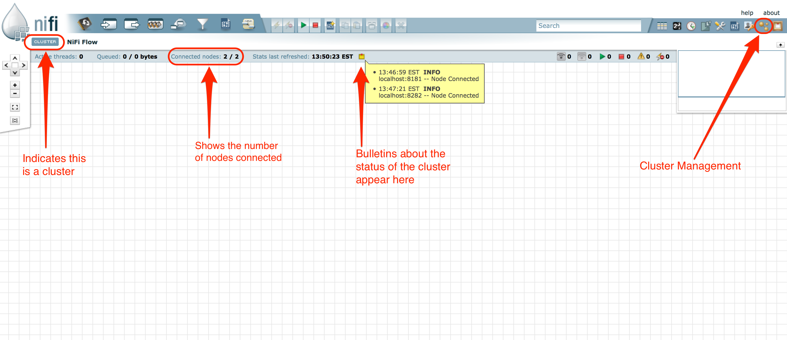

System Requirements
Apache NiFi can run on something as simple as a laptop, but it can also be clustered across many enterprise-class servers. Therefore, the amount of hardware and memory needed will depend on the size and nature of the dataflow involved. The data is stored on disk while NiFi is processing it. So NiFi needs to have sufficient disk space allocated for its various repositories, particularly the content repository, flowfile repository, and provenance repository (see the System Properties section for more information about these repositories). NiFi has the following minimum system requirements:
-
Requires Java 7 or newer
-
Supported Operating Systems:
-
Linux
-
Unix
-
Windows
-
Mac OS X
-
-
Supported Web Browsers:
-
Internet Explorer 9+ (see note below)
-
Mozilla FireFox 24+
-
Google Chrome 36+
-
Safari 8
-
Note that there is a known issue in Internet Explorer (IE) 10 and 11 that can cause problems when moving items on the NiFi graph. If you encounter this problem, we suggest using a browser other than IE. This known issue is described here: https://connect.microsoft.com/IE/Feedback/Details/1050422.
How to install and start NiFi
-
Linux/Unix/OS X
-
Decompress and untar into desired installation directory
-
Make any desired edits in files found under <installdir>/conf
-
At a minimum, we recommend editing the nifi.properties file and entering a password for the nifi.sensitive.props.key (see System Properties below)
-
-
From the <installdir>/bin directory, execute the following commands by typing ./nifi.sh <command>:
-
start: starts NiFi in the background
-
stop: stops NiFi that is running in the background
-
status: provides the current status of NiFi
-
run: runs NiFi in the foreground and waits for a Ctrl-C to initiate shutdown of NiFi
-
install: installs NiFi as a service that can then be controlled via
-
service nifi start
-
service nifi stop
-
service nifi status
-
-
-
-
Windows
-
Decompress into the desired installation directory
-
Make any desired edits in the files found under <installdir>/conf
-
At a minimum, we recommend editing the nifi.properties file and entering a password for the nifi.sensitive.props.key (see System Properties below)
-
-
Navigate to the <installdir>/bin directory
-
Double-click run-nifi.bat. This runs NiFi in the foreground and waits for a Ctrl-C to initiate shutdown of NiFi
-
Alternatively, to start NiFi in the background, double-click start-nifi.bat
-
To stop NiFi running in the background, double-click stop-nifi.bat
-
To see the current status of NiFi, double-click status-nifi.bat
-
When NiFi first starts up, the following files and directories are created:
-
content_repository
-
database_repository
-
flowfile_repository
-
provenance_repository
-
work directory
-
logs directory
-
Within the conf directory, the flow.xml.gz file and the templates directory are created
See the System Properties section of this guide for more information about configuring NiFi repositories and configuration files.
Configuration Best Practices
| If you are running on Linux, consider these best practices. Typical Linux defaults are not necessarily well tuned for the needs of an IO intensive application like NiFi. For all of these areas, your distribution’s requirements may vary. Use these sections as advice, but consult your distribution-specific documentation for how best to achieve these recommendations. |
- Maximum File Handles
-
NiFi will at any one time potentially have a very large number of file handles open. Increase the limits by editing /etc/security/limits.conf to add something like
* hard nofile 50000 * soft nofile 50000
- Maximum Forked Processes
-
NiFi may be configured to generate a significant number of threads. To increase the allowable number edit /etc/security/limits.conf
* hard nproc 10000 * soft nproc 10000
And your distribution may require an edit to /etc/security/limits.d/90-nproc.conf by adding
* soft nproc 10000
- Increase the number of TCP socket ports available
-
This is particularly important if your flow will be setting up and tearing down a large number of sockets in small period of time.
sudo sysctl -w net.ipv4.ip_local_port_range="10000 65000"
- Set how long sockets stay in a TIMED_WAIT state when closed
-
You don’t want your sockets to sit and linger too long given that you want to be able to quickly setup and teardown new sockets. It is a good idea to read more about it but to adjust do something like
sudo sysctl -w net.ipv4.netfilter.ip_conntrack_tcp_timeout_time_wait="1"
- Tell Linux you never want NiFi to swap
-
Swapping is fantastic for some applications. It isn’t good for something like NiFi that always wants to be running. To tell Linux you’d like swapping off you can edit /etc/sysctl.conf to add the following line
vm.swappiness = 0
For the partitions handling the various NiFi repos turn off things like atime. Doing so can cause a surprising bump in throughput. Edit the /etc/fstab file and for the partition(s) of interest add the noatime option.
Security Configuration
NiFi provides several different configuration options for security purposes. The most important properties are those under the "security properties" heading in the nifi.properties file. In order to run securely, the following properties must be set:
| Property Name | Description |
|---|---|
|
Specifies the roles that should be granted to users that connect over HTTPS anonymously. All users can make use of anonymous access, however if they have been granted a particular level of access by an administrator it will take precedence if they access NiFi using a client certificate or once they have logged in. |
|
Filename of the Keystore that contains the server’s private key. |
|
The type of Keystore. Must be either |
|
The password for the Keystore. |
|
The password for the certificate in the Keystore. If not set, the value of |
|
Filename of the Truststore that will be used to authorize those connecting to NiFi. If not set, all who attempt to connect will be provided access as the Anonymous user. |
|
The type of the Truststore. Must be either |
|
The password for the Truststore. |
|
Specifies whether or not connecting clients must authenticate themselves. Specifically this property is used
by the NiFi cluster protocol. If the Truststore properties are not set, this must be |
Once the above properties have been configured, we can enable the User Interface to be accessed over HTTPS instead of HTTP. This is accomplished
by setting the nifi.web.https.host and nifi.web.https.port properties. The nifi.web.https.host property indicates which hostname the server
should run on. This allows admins to configure the application to run only on specific network interfaces. If it is desired that the HTTPS interface
be accessible from all network interfaces, a value of 0.0.0.0 should be used.
It is important when enabling HTTPS that the nifi.web.http.port property be unset.
|
Similar to nifi.security.needClientAuth, the web server can be configured to require certificate based client authentication for users accessing
the User Interface. In order to do this it must be configured to not support username/password authentication (see below) and not grant access to
anonymous users (see nifi.security.anonymous.authorities above). Either of these options will configure the web server to WANT certificate based client
authentication. This will allow it to support users with certificates and those without that may be logging in with their credentials or those accessing
anonymously. If username/password authentication and anonymous access are not configured, the web server will REQUIRE certificate based client authentication.
Now that the User Interface has been secured, we can easily secure Site-to-Site connections and inner-cluster communications, as well. This is
accomplished by setting the nifi.remote.input.secure and nifi.cluster.protocol.is.secure properties, respectively, to true.
User Authentication
NiFi supports user authentication via client certificates or via username/password. Username/password authentication is performed by a Login Identity Provider. The Login Identity Provider is a pluggable mechanism for authenticating users via their username/password. Which Login Identity Provider to use is configured in two properties in the nifi.properties file.
The nifi.login.identity.provider.configuration.file property specifies the configuration file for Login Identity Providers.
The nifi.security.user.login.identity.provider property indicates which of the configured Login Identity Provider should be
used. If this property is not configured, NiFi will not support username/password authentication and will require client
certificates for authenticating users over HTTPS. By default, this property is not configured meaning that username/password must be
explicity enabled.
NiFi does not perform user authentication over HTTP. Using HTTP all users will be granted all roles.
Below is an example and description of configuring a Login Identity Provider that integrates with a Directory Server to authenticate users.
<provider>
<identifier>ldap-provider</identifier>
<class>org.apache.nifi.ldap.LdapProvider</class>
<property name="Authentication Strategy">START_TLS</property>
<property name="Manager DN"></property>
<property name="Manager Password"></property>
<property name="TLS - Keystore"></property>
<property name="TLS - Keystore Password"></property>
<property name="TLS - Keystore Type"></property>
<property name="TLS - Truststore"></property>
<property name="TLS - Truststore Password"></property>
<property name="TLS - Truststore Type"></property>
<property name="TLS - Client Auth"></property>
<property name="TLS - Protocol"></property>
<property name="TLS - Shutdown Gracefully"></property>
<property name="Referral Strategy">FOLLOW</property>
<property name="Connect Timeout">10 secs</property>
<property name="Read Timeout">10 secs</property>
<property name="Url"></property>
<property name="User Search Base"></property>
<property name="User Search Filter"></property>
<property name="Authentication Expiration">12 hours</property>
</provider>
With this configuration, username/password authentication can be enabled by referencing this provider in nifi.properties.
nifi.security.user.login.identity.provider=ldap-provider
| Property Name | Description |
|---|---|
|
The duration of how long the user authentication is valid for. If the user never logs out, they will be required to log back in following this duration. |
|
How the connection to the LDAP server is authenticated. Possible values are ANONYMOUS, SIMPLE, or START_TLS. |
|
The DN of the manager that is used to bind to the LDAP server to search for users. |
|
The password of the manager that is used to bind to the LDAP server to search for users. |
|
Path to the Keystore that is used when connecting to LDAP using START_TLS. |
|
Password for the Keystore that is used when connecting to LDAP using START_TLS. |
|
Type of the Keystore that is used when connecting to LDAP using START_TLS (i.e. JKS or PKCS12). |
|
Path to the Truststore that is used when connecting to LDAP using START_TLS. |
|
Password for the Truststore that is used when connecting to LDAP using START_TLS. |
|
Type of the Truststore that is used when connecting to LDAP using START_TLS (i.e. JKS or PKCS12). |
|
Client authentication policy when connecting to LDAP using START_TLS. Possible values are REQUIRED, WANT, NONE. |
|
Protocol to use when connecting to LDAP using START_TLS. (i.e. TLS, TLSv1.1, TLSv1.2, etc). |
|
Specifies whether the TLS should be shut down gracefully before the target context is closed. Defaults to false. |
|
Strategy for handling referrals. Possible values are FOLLOW, IGNORE, THROW. |
|
Duration of connect timeout. (i.e. 10 secs). |
|
Duration of read timeout. (i.e. 10 secs). |
|
Url of the LDAP servier (i.e. ldap://<hostname>:<port>). |
|
Base DN for searching for users (i.e. CN=Users,DC=example,DC=com). |
|
Filter for searching for users against the User Search Base. (i.e. sAMAccountName={0}). The user specified name is inserted into {0}. |
Controlling Levels of Access
Once NiFi is configured to run securely and an authentication mechanism is configured, it is necessary to configure who will have access to the system and what types of access those people will have. NiFi controls this through the user of an Authority Provider. The Authority Provider is a pluggable mechanism for providing authorizations to different users. Which Authority Provider to use is configured using two properties in the nifi.properties file.
The nifi.authority.provider.configuration.file property specifies the configuration file for Authority Providers.
The nifi.security.user.authority.provider property indicates which of the configured Authority Providers should be
used.
By default, the file-provider Authority Provider is selected and is configured to use the permissions granted in
the authorized-users.xml file. This is typically sufficient for instances of NiFi that are run in "standalone" mode.
If the NiFi instance is configured to run in a cluster, the node will typically use the cluster-node-provider
Provider and the Cluster Manager will typically use the cluster-ncm-provider Provider. Both of these Providers
have a default configuration in the authority-providers.xml file but are commented out.
When using the cluster-node-provider Provider, all of the authorization is provided by the Cluster Manager. In this
way, the configuration only has to be maintained in one place and will be consistent across the entire cluster.
When configuring the Cluster Manager or a standalone node, it is necessary to manually designate an ADMIN user in the authorized-users.xml file, which is located in the root installation’s conf directory. After this ADMIN user has been added, s/he may grant access to other users, systems, and other instances of NiFi, through the User Interface (UI) without having to manually edit the authorized-users.xml file. If you are the administrator, you would add yourself as the ADMIN user in this file.
Open the authorized-users.xml file in a text editor. You will notice that it includes a template to guide you, with example entries that are commented out.
It is only necessary to manually add one user, the ADMIN user, to this file. So, at a minimum, the following example entry should be included and contain the user Distinguished Name (DN) in place of "user dn - read only and admin":
<users>
<user dn="[user dn - read only and admin]">
<role name="ROLE_ADMIN"/>
</user>
</users>
Here is an example entry using the name John Smith:
<users>
<user dn="cn=John Smith,ou=people,dc=example,dc=com">
<role name="ROLE_ADMIN"/>
</user>
</users>
After the authorized-users.xml file has been edited and saved, restart NiFi. Once the application starts, the ADMIN user is able to access the UI at the HTTPS URL that is configured in the nifi.properties file.
From the UI, click on the Users icon (  ) in the
Management Toolbar (upper-right corner of the UI), and the User Management Page opens.
) in the
Management Toolbar (upper-right corner of the UI), and the User Management Page opens.
The ADMIN user should be listed. Click on the pencil icon to see this user’s role(s). You may edit the roles by selecting the appropriate checkboxes.
The following roles are available in NiFi:
| Role Name | Description |
|---|---|
Proxy |
The Proxy Role is assigned to a system in order to grant that system permission to make requests on behalf of a user. For instance, if an HTTP proxy service is used to gain access to the system, the certificate being used by that service can be given the Proxy Role. |
Administrator |
Administrator is able to configure thread pool sizes and user accounts as well as purge the dataflow change history. |
Data Flow Manager |
Data Flow Manager is given the ability to manipulate the dataflow. S/he is able to add, remove, and manipulate components on the graph; add, remove, and manipulate Controller Services and Reporting Tasks; create and manage templates; view statistics; and view the bulletin board. |
Read Only |
Users with Read Only access are able to view the dataflow but are unable to change anything. |
Provenance |
Users with Provenance access are able to query the Data Provenance repository and view the lineage of data. Additionally, this role provides the ability to view or download the content of a FlowFile from a Provenance event (assuming that the content is still available in the Content Repository and that the Authority Provider also grants access). This access is not provided to users with Read Only (unless the user has both Read Only and Provenance roles) because the information provided to users with this role can potentially be very sensitive in nature, as all FlowFile attributes and data are exposed. In order to Replay a Provenance event, a user is required to have both the Provenance role as well as the Data Flow Manager role. |
NiFi |
The NiFi Role is intended to be assigned to machines that will interact with an instance of NiFi via Site-to-Site. This role provides the ability to send data to or retrieve data from Root Group Ports (but only those that they are given permissions to interact with - see the User Guide for more information on providing access to specific Ports) as well as obtain information about which Ports exist. Note that this role allows the client to know only about the Ports that it has permissions to interact with. |
When users want access to the NiFi UI, they navigate to the configured URL and are prompted to request access. When someone has requested access, the ADMIN user sees a star on the Users icon in the Management Toolbar, alerting the ADMIN to the fact that a request is pending. Upon opening the User Management Page, the pending request is visible, and the ADMIN can grant access and click on the pencil icon to set the user’s roles appropriately.
The ADMIN may also select multiple users and add them to a "Group". Hold down the Shift key and select
multiple users, then click the Group button in the upper-right corner of the User Management Page.
Then, provide a name for the group.
The group feature is especially useful when a remote NiFi cluster is connecting to this NiFi using a Remote Process Group. In that scenario, all the nodes in the remote cluster can be included in the same group. When the ADMIN wants to grant port access to the remote cluster, s/he can grant it to the group and avoid having to grant it individually to each node in the cluster.
Clustering Configuration
This section provides a quick overview of NiFi Clustering and instructions on how to set up a basic cluster. In the future, we hope to provide supplemental documentation that covers the NiFi Cluster Architecture in depth.
The design of NiFi clustering is a simple master/slave model where there is a master and one or more slaves. While the model is that of master and slave, if the master dies, the slaves are all instructed to continue operating as they were to ensure the dataflow remains live. The absence of the master simply means new slaves cannot join the cluster and cluster flow changes cannot occur until the master is restored. In NiFi clustering, we call the master the NiFi Cluster Manager (NCM), and the slaves are called Nodes. See a full description of each in the Terminology section below.
Why Cluster?
NiFi Administrators or Dataflow Managers (DFMs) may find that using one instance of NiFi on a single server is not enough to process the amount of data they have. So, one solution is to run the same dataflow on multiple NiFi servers. However, this creates a management problem, because each time DFMs want to change or update the dataflow, they must make those changes on each server and then monitor each server individually. By clustering the NiFi servers, it’s possible to have that increased processing capability along with a single interface through which to make dataflow changes and monitor the dataflow. Clustering allows the DFM to make each change only once, and that change is then replicated to all the nodes of the cluster. Through the single interface, the DFM may also monitor the health and status of all the nodes.
NiFi Clustering is unique and has its own terminology. It’s important to understand the following terms before setting up a cluster.
Terminology
NiFi Cluster Manager: A NiFi Cluster Manager (NCM) is an instance of NiFi that provides the sole management point for the cluster. It communicates dataflow changes to the nodes and receives health and status information from the nodes. It also ensures that a uniform dataflow is maintained across the cluster. When DFMs manage a dataflow in a cluster, they do so through the User Interface of the NCM (i.e., via the URL of the NCM’s User Interface). Fundamentally, the NCM keeps the state of the cluster consistent.
Nodes: Each cluster is made up of the NCM and one or more nodes. The nodes do the actual data processing. (The NCM does not process any data; all data runs through the nodes.) While nodes are connected to a cluster, the DFM may not access the User Interface for any of the individual nodes. The User Interface of a node may only be accessed if the node is manually removed from the cluster.
Primary Node: Every cluster has one Primary Node. On this node, it is possible to run "Isolated Processors" (see below). By default, the NCM will elect the first node that connects to the cluster as the Primary Node; however, the DFM may select a new node as the Primary Node in the Cluster Management page of the User Interface if desired. If the cluster restarts, the NCM will "remember" which node was the Primary Node and wait for that node to re-connect before allowing the DFM to make any changes to the dataflow. The ADMIN may adjust how long the NCM waits for the Primary Node to reconnect by adjusting the property nifi.cluster.manager.safemode.duration in the nifi.properties file, which is discussed in the System Properties section of this document.
Isolated Processors: In a NiFi cluster, the same dataflow runs on all the nodes. As a result, every component in the flow runs on every node. However, there may be cases when the DFM would not want every processor to run on every node. The most common case is when using a processor that communicates with an external service using a protocol that does not scale well. For example, the GetSFTP processor pulls from a remote directory, and if the GetSFTP on every node in the cluster tries simultaneously to pull from the same remote directory, there could be race conditions. Therefore, the DFM could configure the GetSFTP on the Primary Node to run in isolation, meaning that it only runs on that node. It could pull in data and -with the proper dataflow configuration- load-balance it across the rest of the nodes in the cluster. Note that while this feature exists, it is also very common to simply use a standalone NiFi instance to pull data and feed it to the cluster. It just depends on the resources available and how the Administrator decides to configure the cluster.
Heartbeats: The nodes communicate their health and status to the NCM via "heartbeats", which let the NCM know they are still connected to the cluster and working properly. By default, the nodes emit heartbeats to the NCM every 5 seconds, and if the NCM does not receive a heartbeat from a node within 45 seconds, it disconnects the node due to "lack of heartbeat". (The 5-second and 45-second settings are configurable in the nifi.properties file. See the System Properties section of this document for more information.) The reason that the NCM disconnects the node is because the NCM needs to ensure that every node in the cluster is in sync, and if a node is not heard from regularly, the NCM cannot be sure it is still in sync with the rest of the cluster. If, after 45 seconds, the node does send a new heartbeat, the NCM will automatically reconnect the node to the cluster. Both the disconnection due to lack of heartbeat and the reconnection once a heartbeat is received are reported to the DFM in the NCM’s User Interface.
Communication within the Cluster
As noted, the nodes communicate with the NCM via heartbeats. The communication that allows the nodes to find the NCM may be set up as multicast or unicast; this is configured in the nifi.properties file (See System Properties ). By default, unicast is used. It is important to note that the nodes in a NiFi cluster are not aware of each other. They only communicate with the NCM. Therefore, if one of the nodes goes down, the other nodes in the cluster will not automatically pick up the load of the missing node. It is possible for the DFM to configure the dataflow for failover contingencies; however, this is dependent on the dataflow design and does not happen automatically.
When the DFM makes changes to the dataflow, the NCM communicates those changes to the nodes and waits for each node to respond, indicating that it has made the change on its local flow. If the DFM wants to make another change, the NCM will only allow this to happen once all the nodes have acknowledged that they’ve implemented the last change. This is a safeguard to ensure that all the nodes in the cluster have the correct and up-to-date flow.
Dealing with Disconnected Nodes
A DFM may manually disconnect a node from the cluster. But if a node becomes disconnected for any other reason (such as due to lack of heartbeat), the NCM will show a bulletin on the User Interface, and the DFM will not be able to make any changes to the dataflow until the issue of the disconnected node is resolved. The DFM or the Administrator will need to troubleshoot the issue with the node and resolve it before any new changes may be made to the dataflow. However, it is worth noting that just because a node is disconnected does not mean that it is not working; it just means that the NCM cannot communicate with the node.
Basic Cluster Setup
This section describes the setup for a simple two-node, non-secure, unicast cluster comprised of three instances of NiFi:
-
The NCM
-
Node 1
-
Node 2
Administrators may install each instance on a separate server; however, it is also perfectly fine to install the NCM and one of the nodes on the same server, as the NCM is very lightweight. Just keep in mind that the ports assigned to each instance must not collide if the NCM and one of the nodes share the same server.
For each instance, certain properties in the nifi.properties file will need to be updated. In particular, the Web and Clustering properties should be evaluated for your situation and adjusted accordingly. All the properties are described in the System Properties section of this guide; however, in this section, we will focus on the minimum properties that must be set for a simple cluster.
For all three instances, the Cluster Common Properties can be left with the default settings. Note, however, that if you change these settings, they must be set the same on every instance in the cluster (NCM and nodes).
For the NCM, the minimum properties to configure are as follows:
-
Under the Web Properties, set either the http or https port that you want the NCM to run on. If the NCM and one of the nodes are on the same server, make sure this port is different from the web port used by the node.
-
Under the Cluster Manager Properties, set the following:
-
nifi.cluster.is.manager - Set this to true.
-
nifi.cluster.manager.protocol.port - Set this to an open port that is higher than 1024 (anything lower requires root). Take note of this setting, as you will need to reference it when you set up the nodes.
-
For Node 1, the minimum properties to configure are as follows:
-
Under the Web Properties, set either the http or https port that you want Node 1 to run on. If the NCM is running on the same server, choose a different web port for Node 1. Also, consider whether you need to set the http or https host property.
-
Under Cluster Node Properties, set the following:
-
nifi.cluster.is.node - Set this to true.
-
nifi.cluster.node.address - Set this to the fully qualified hostname of the node. If left blank, it defaults to "localhost".
-
nifi.cluster.node.protocol.port - Set this to an open port that is higher than 1024 (anything lower requires root). If Node 1 and the NCM are on the same server, make sure this port is different from the nifi.cluster.manager.protocol.port.
-
nifi.cluster.node.unicast.manager.address - Set this to the NCM’s fully qualified hostname.
-
nifi.cluster.node.unicast.manager.protocol.port - Set this to exactly the same port that was set on the NCM for the property nifi.cluster.manager.protocol.port.
-
For Node 2, the minimum properties to configure are as follows:
-
Under the Web Properties, set either the http or https port that you want Node 2 to run on. Also, consider whether you need to set the http or https host property.
-
Under the Cluster Node Properties, set the following:
-
nifi.cluster.is.node - Set this to true.
-
nifi.cluster.node.address - Set this to the fully qualified hostname of the node. If left blank, it defaults to "localhost".
-
nifi.cluster.node.protocol.port - Set this to an open port that is higher than 1024 (anything lower requires root).
-
nifi.cluster.node.unicast.manager.address - Set this to the NCM’s fully qualified hostname.
-
nifi.cluster.node.unicast.manager.protocol.port - Set this to exactly the same port that was set on the NCM for the property nifi.cluster.manager.protocol.port.
-
Now, it is possible to start up the cluster. Technically, it does not matter which instance starts up first. However, you could start the NCM first, then Node 1 and then Node 2. Since the first node that connects is automatically elected as the Primary Node, this sequence should create a cluster where Node 1 is the Primary Node. Navigate to the URL for the NCM in your web browser, and the User Interface should look similar to the following:

Troubleshooting
If you encounter issues and your cluster does not work as described, investigate the nifi.app log and nifi.user log on both the NCM and the nodes. If needed, you can change the logging level to DEBUG by editing the conf/logback.xml file. Specifically, set the level="DEBUG" in the following line (instead of "INFO"):
<logger name="org.apache.nifi.web.api.config" level="INFO"
additivity="false">
<appender-ref ref="USER_FILE"/>
</logger>
Bootstrap Properties
The bootstrap.conf file in the conf directory allows users to configure settings for how NiFi should be started. This includes parameters, such as the size of the Java Heap, what Java command to run, and Java System Properties.
Here, we will address the different properties that are made available in the file. Any changes to this file will take effect only after NiFi has been stopped and restarted.
Property |
Description |
java |
Specifies the fully qualified java command to run. By default, it is simply |
run.as |
The username to run NiFi as. For instance, if NiFi should be run as the nifi user, setting this value to nifi will cause the NiFi Process to be run as the nifi user. This property is ignored on Windows. For Linux, the specified user may require sudo permissions. |
lib.dir |
The lib directory to use for NiFi. By default, this is set to |
conf.dir |
The conf directory to use for NiFi. By default, this is set to |
graceful.shutdown.seconds |
When NiFi is instructed to shutdown, the Bootstrap will wait this number of seconds for the process to shutdown cleanly. At this amount of time, if the service is still running, the Bootstrap will "kill" the process, or terminate it abruptly. |
java.arg.N |
Any number of JVM arguments can be passed to the NiFi JVM when the process is started. These arguments are defined by adding properties to bootstrap.conf that
begin with |
notification.services.file |
When NiFi is started, or stopped, or when the Bootstrap detects that NiFi has died, the Bootstrap is able to send notifications of these events to interested parties. This is configured by specifying an XML file that defines which notification services can be used. More about this file can be found in the Notification Services section. |
notification.max.attempts |
If a notification service is configured but is unable to perform its function, it will try again up to a maximum number of attempts. This property
configures what that maximum number of attempts is. The default is |
nifi.start.notification.services |
This property is a comma-separated list of Notification Service identifiers that correspond to the Notification Services
defined in the |
nifi.stop.notification.services |
This property is a comma-separated list of Notification Service identifiers that correspond to the Notification Services
defined in the |
nifi.died.notification.services |
This property is a comma-separated list of Notification Service identifiers that correspond to the Notification Services
defined in the |
Notification Services
When the NiFi bootstrap starts or stops NiFi, or detects that it has died unexpectedly, it is able to notify configured recipients. At this point (version 0.3.0 of Apache NiFi), the only mechanism supplied is to send an e-mail notification. The notification services configuration file, however, is a configurable XML file so that as new notification capabilities are developed, they will be configured similarly.
The default location of the XML file is conf/bootstrap-notification-services.xml, but this value can be changed in the conf/bootstrap.conf file.
The syntax of the XML file is as follows:
<services>
<!-- any number of service elements can be defined. -->
<service>
<id>some-identifier</id>
<!-- The fully-qualified class name of the Notification Service. -->
<class>org.apache.nifi.bootstrap.notification.email.EmailNotificationService</class>
<!-- Any number of properties can be set using this syntax.
The properties available depend on the Notification Service. -->
<property name="Property Name 1">Property Value</property>
<property name="Another Property Name">Property Value 2</property>
</service>
</services>
Once the desired services have been configured, they can then be referenced in the bootstrap.conf file.
Currently, the only implementation is the org.apache.nifi.bootstrap.notification.email.EmailNotificationService implementation.
It has the following properties available:
Property |
Required |
Description |
SMTP Hostname |
true |
The hostname of the SMTP Server that is used to send Email Notifications |
SMTP Port |
true |
The Port used for SMTP communications |
SMTP Username |
true |
Username for the SMTP account |
SMTP Password |
Password for the SMTP account |
|
SMTP Auth |
Flag indicating whether authentication should be used |
|
SMTP TLS |
Flag indicating whether TLS should be enabled |
|
SMTP Socket Factory |
javax.net.ssl.SSLSocketFactory |
|
SMTP X-Mailer Header |
X-Mailer used in the header of the outgoing email |
|
Content Type |
Mime Type used to interpret the contents of the email, such as text/plain or text/html |
|
From |
true |
Specifies the Email address to use as the sender. Otherwise, a "friendly name" can be used as the From address, but the value must be enclosed in double-quotes. |
To |
The recipients to include in the To-Line of the email |
|
CC |
The recipients to include in the CC-Line of the email |
|
BCC |
The recipients to include in the BCC-Line of the email |
In addition to the properties above that are marked as required, at least one of the To, CC, or BCC properties
must be set.
A complete example of configuring the Email service would look like the following:
<service>
<id>email-notification</id>
<class>org.apache.nifi.bootstrap.notification.email.EmailNotificationService</class>
<property name="SMTP Hostname">smtp.gmail.com</property>
<property name="SMTP Port">587</property>
<property name="SMTP Username">username@gmail.com</property>
<property name="SMTP Password">super-secret-password</property>
<property name="SMTP TLS">true</property>
<property name="From">"NiFi Service Notifier"</property>
<property name="To">username@gmail.com</property>
</service>
System Properties
The nifi.properties file in the conf directory is the main configuration file for controlling how NiFi runs. This section provides an overview of the properties in this file and includes some notes on how to configure it in a way that will make upgrading easier. After making changes to this file, restart NiFi in order for the changes to take effect.
| The contents of this file are relatively stable but do change from time to time. It is always a good idea to review this file when upgrading and pay attention for any changes. Consider configuring items below marked with an asterisk (*) in such a way that upgrading will be easier. For details, see a full discussion on upgrading at the end of this section. Note that values for periods of time and data sizes must include the unit of measure, for example "10 sec" or "10 MB", not simply "10". |
Core Properties
The first section of the nifi.properties file is for the Core Properties. These properties apply to the core framework as a whole.
Property |
Description |
nifi.version |
The version number of the current release. If upgrading but reusing this file, be sure to update this value. |
nifi.flow.configuration.file* |
The location of the flow configuration file (i.e., the file that contains what is currently displayed on the NiFi graph). The default value is ./conf/flow.xml.gz. |
nifi.flow.configuration.archive.dir* |
The location of the archive directory where backup copies of the flow.xml are saved. The default value is ./conf/archive. |
nifi.flowcontroller.autoResumeState |
Indicates whether -upon restart- the components on the NiFi graph should return to their last state. The default value is true. |
nifi.flowcontroller.graceful.shutdown.period |
Indicates the shutdown period. The default value is 10 sec. |
nifi.flowservice.writedelay.interval |
When many changes are made to the flow.xml, this property specifies how long to wait before writing out the changes, so as to batch the changes into a single write. The default value is 500 ms. |
nifi.administrative.yield.duration |
If a component allows an unexpected exception to escape, it is considered a bug. As a result, the framework will pause (or administratively yield) the component for this amount of time. This is done so that the component does not use up massive amounts of system resources, since it is known to have problems in the existing state. The default value is 30 sec. |
nifi.bored.yield.duration |
When a component has no work to do (i.e., is "bored"), this is the amount of time it will wait before checking to see if it has new data to work on. This way, it does not use up CPU resources by checking for new work too often. When setting this property, be aware that it could add extra latency for components that do not constantly have work to do, as once they go into this "bored" state, they will wait this amount of time before checking for more work. The default value is 10 millis. |
nifi.authority.provider.configuration.file* |
This is the location of the file that specifies how user access is authorized. The default value is ./conf/authority-providers.xml. |
nifi.login.identity.provider.configuration.file* |
This is the location of the file that specifies how username/password authentication is performed. This file is
only consider if |
nifi.templates.directory* |
This is the location of the directory where flow templates are saved. The default value is ./conf/templates.l |
nifi.ui.banner.text |
This is banner text that may be configured to display at the top of the User Interface. It is blank by default. |
nifi.ui.autorefresh.interval |
The interval at which the User Interface auto-refreshes. The default value is 30 sec. |
nifi.nar.library.directory |
The location of the nar library. The default value is ./lib and probably should be left as is. |
nifi.nar.working.directory |
The location of the nar working directory. The default value is ./work/nar and probably should be left as is. |
nifi.documentation.working.directory |
The documentation working directory. The default value is ./work/docs/components and probably should be left as is. |
H2 Settings
The H2 Settings section defines the settings for the H2 database, which keeps track of user access and flow controller history.
Property |
Description |
nifi.database.directory |
The location of the H2 database directory. The default value is ./database_repository. |
nifi.h2.url.append |
This property specifies additional arguments to add to the connection string for the H2 database. The default value should be used and should not be changed. It is: ;LOCK_TIMEOUT=25000;WRITE_DELAY=0;AUTO_SERVER=FALSE. |
FlowFile Repository
The FlowFile repository keeps track of the attributes and current state of each FlowFile in the system. By default, this repository is installed in the same root installation directory as all the other repositories; however, it is advisable to configure it on a separate drive if available.
Property |
Description |
nifi.flowfile.repository.implementation |
The FlowFile Repository implementation. The default value is org.apache.nifi.controller.repository.WriteAheadFlowFileRepository and should not be changed. |
nifi.flowfile.repository.directory* |
The location of the FlowFile Repository. The default value is ./flowfile_repository. |
nifi.flowfile.repository.partitions |
The number of partitions. The default value is 256. |
nifi.flowfile.repository.checkpoint.interval |
The FlowFile Repository checkpoint interval. The default value is 2 mins. |
nifi.flowfile.repository.always.sync |
If set to true, any change to the repository will be synchronized to the disk, meaning that NiFi will ask the operating system not to cache the information. This is very expensive and can significantly reduce NiFi performance. However, if it is false, there could be the potential for data loss if either there is a sudden power loss or the operating system crashes. The default value is false. |
Swap Management
NiFi keeps FlowFile information in memory (the JVM) but during surges of incoming data, the FlowFile information can start to take up so much of the JVM that system performance suffers. To counteract this effect, NiFi "swaps" the FlowFile information to disk temporarily until more JVM space becomes available again. These properties govern how that process occurs.
Property |
Description |
nifi.swap.manager.implementation |
The Swap Manager implementation. The default value is org.apache.nifi.controller.FileSystemSwapManager and should not be changed. |
nifi.queue.swap.threshold |
The queue threshold at which NiFi starts to swap FlowFile information to disk. The default value is 20000. |
nifi.swap.in.period |
The swap in period. The default value is 5 sec. |
nifi.swap.in.threads |
The number of threads to use for swapping in. The default value is 1. |
nifi.swap.out.period |
The swap out period. The default value is 5 sec. |
nifi.swap.out.threads |
The number of threads to use for swapping out. The default value is 4. |
Content Repository
The Content Repository holds the content for all the FlowFiles in the system. By default, it is installed in the same root installation directory as all the other repositories; however, administrators will likely want to configure it on a separate drive if available. If nothing else, it is best if the Content Repository is not on the same drive as the FlowFile Repository. In dataflows that handle a large amount of data, the Content Repository could fill up a disk and the FlowFile Repository, if also on that disk, could become corrupt. To avoid this situation, configure these repositories on different drives.
Property |
Description |
nifi.content.repository.implementation |
The Content Repository implementation. The default value is org.apache.nifi.controller.repository.FileSystemRepository and should not be changed. |
nifi.content.claim.max.appendable.size |
The maximum size for a content claim. The default value is 10 MB. |
nifi.content.claim.max.flow.files |
The maximum number of FlowFiles to assign to one content claim. The default value is 100. |
nifi.content.repository.directory.default* |
The location of the Content Repository. The default value is ./content_repository. |
nifi.content.repository.archive.max.retention.period |
If archiving is enabled (see nifi.content.repository.archive.enabled below), then this property specifies the maximum amount of time to keep the archived data. It is 12 hours by default. |
nifi.content.repository.archive.max.usage.percentage |
If archiving is enabled (see nifi.content.repository.archive.enabled below), then this property also must have a value to indicate the maximum percentage of disk space that may be used before archive data is removed. If this value is already met even before archiving then arhival will not be of much use. It is 50% by default. |
nifi.content.repository.archive.enabled |
To enable archiving, set this to true and specify a value for the nifi.content.repository.archive.max.usage.percentage property above. By default, archiving is enabled. |
nifi.content.repository.always.sync |
If set to true, any change to the repository will be synchronized to the disk, meaning that NiFi will ask the operating system not to cache the information. This is very expensive and can significantly reduce NiFi performance. However, if it is false, there could be the potential for data loss if either there is a sudden power loss or the operating system crashes. The default value is false. |
nifi.content.viewer.url |
The URL for a web-based content viewer if one is available. It is blank by default. |
Provenance Repository
The Provenance Repository contains the information related to Data Provenance. The next three sections are for Provenance Repository properties.
Property |
Description |
nifi.provenance.repository.implementation |
The Provenance Repository implementation. The default value is org.apache.nifi.provenance.PersistentProvenanceRepository and should not be changed. |
Persistent Provenance Repository Properties
Property |
Description |
nifi.provenance.repository.directory.default* |
The location of the Provenance Repository. The default value is ./provenance_repository. |
nifi.provenance.repository.max.storage.time |
The maximum amount of time to keep data provenance information. The default value is 24 hours. |
nifi.provenance.repository.max.storage.size |
The maximum amount of data provenance information to store at a time. The default is 1 GB. |
nifi.provenance.repository.rollover.time |
The amount of time to wait before rolling over the latest data provenance information so that it is available in the User Interface. The default value is 5 mins. |
nifi.provenance.repository.rollover.size |
The amount of information to roll over at a time. The default value is 100 MB. |
nifi.provenance.repository.query.threads |
The number of threads to use for Provenance Repository queries. The default value is 2. |
nifi.provenance.repository.index.threads |
The number of threads to use for indexing Provenance events so that they are searchable. The default value is 1. For flows that operate on a very high number of FlowFiles, the indexing of Provenance events could become a bottleneck. If this is the case, a bulletin will appear, indicating that "The rate of the dataflow is exceeding the provenance recording rate. Slowing down flow to accommodate." If this happens, increasing the value of this property may increase the rate at which the Provenance Repository is able to process these records, resulting in better overall throughput. |
nifi.provenance.repository.compress.on.rollover |
Indicates whether to compress the provenance information when rolling it over. The default value is true. |
nifi.provenance.repository.always.sync |
If set to true, any change to the repository will be synchronized to the disk, meaning that NiFi will ask the operating system not to cache the information. This is very expensive and can significantly reduce NiFi performance. However, if it is false, there could be the potential for data loss if either there is a sudden power loss or the operating system crashes. The default value is false. |
nifi.provenance.repository.journal.count |
The number of journal files that should be used to serialize Provenance Event data. Increasing this value will allow more tasks to simultaneously update the repository but will result in more expensive merging of the journal files later. This value should ideally be equal to the number of threads that are expected to update the repository simultaneously, but 16 tends to work well in must environments. The default value is 16. |
nifi.provenance.repository.indexed.fields |
This is a comma-separated list of the fields that should be indexed and made searchable. Fields that are not indexed will not be searchable. Valid fields are: EventType, FlowFileUUID, Filename, TransitURI, ProcessorID, AlternateIdentifierURI, Relationship, Details. The default value is: EventType, FlowFileUUID, Filename, ProcessorID. |
nifi.provenance.repository.indexed.attributes |
This is a comma-separated list of FlowFile Attributes that should be indexed and made searchable. It is blank by default. But some good examples to consider are filename, uuid, and mime.type as well as any custom attritubes you might use which are valuable for your use case. |
nifi.provenance.repository.index.shard.size |
Large values for the shard size will result in more Java heap usage when searching the Provenance Repository but should provide better performance. The default value is 500 MB. |
nifi.provenance.repository.max.attribute.length |
Indicates the maximum length that a FlowFile attribute can be when retrieving a Provenance Event from the repository. If the length of any attribute exceeds this value, it will be truncated when the event is retrieved. The default is 65536. |
Volatile Provenance Repository Properties
Property |
Description |
nifi.provenance.repository.buffer.size |
The Provenance Repository buffer size. The default value is 100000. |
Component Status Repository
The Component Status Repository contains the information for the Component Status History tool in the User Interface. These properties govern how that tool works.
Property |
Description |
nifi.components.status.repository.implementation |
The Component Status Repository implementation. The default value is org.apache.nifi.controller.status.history.VolatileComponentStatusRepository and should not be changed. |
nifi.components.status.repository.buffer.size |
Specifies the buffer size for the Component Status Repository. The default value is 288. |
nifi.components.status.snapshot.frequency |
This value indicates how often to present a snapshot of the components' status history. The default value is 5 mins. |
Site to Site Properties
These properties govern how this instance of NiFi communicates with remote instances of NiFi when Remote Process Groups are configured in the dataflow.
Property |
Description |
nifi.remote.input.socket.host |
The host name that will be given out to clients to connect to this NiFi instance for Site-to-Site communication. By default, it is the value from InetAddress.getLocalHost().getHostName(). On UNIX-like operating systems, this is typically the output from the |
nifi.remote.input.socket.port |
The remote input socket port for Site-to-Site communication. By default, it is blank, but it must have a value in order to use Remote Process Groups. |
nifi.remote.input.secure |
This indicates whether communication between this instance of NiFi and remote NiFi instances should be secure. By default, it is set to true. In order for secure site-to-site to work, many Security Properties (below) must also be configured. |
Web Properties
These properties pertain to the web-based User Interface.
Property |
Description |
nifi.web.war.directory |
This is the location of the web war directory. The default value is ./lib. |
nifi.web.http.host |
The HTTP host. It is blank by default. |
nifi.web.http.port |
The HTTP port. The default value is 8080. |
nifi.web.https.host |
The HTTPS host. It is blank by default. |
nifi.web.https.port |
The HTTPS port. It is blank by default. When configuring NiFi to run securely, this port should be configured. |
nif.web.jetty.working.directory |
The location of the Jetty working directory. The default value is ./work/jetty. |
nifi.web.jetty.threads |
The number of Jetty threads. The default value is 200. |
Security Properties
These properties pertain to various security features in NiFi. Many of these properties are covered in more detail in the Security Configuration section of this Administrator’s Guide.
Property |
Description |
nifi.sensitive.props.key |
This is the password used to encrypt any sensitive property values that are configured in processors. By default, it is blank, but the system administrator should provide a value for it. It can be a string of any length. Be aware that once this password is set and one or more sensitive processor properties have been configured, this password should not be changed. |
nifi.sensitive.props.algorithm |
The algorithm used to encrypt sensitive properties. The default value is PBEWITHMD5AND256BITAES-CBC-OPENSSL. |
nifi.sensitive.props.provider |
The sensitive property provider. The default value is BC. |
nifi.security.keystore* |
The full path and name of the keystore. It is blank by default. |
nifi.security.keystoreType |
The keystore type. It is blank by default. |
nifi.security.keystorePasswd |
The keystore password. It is blank by default. |
nifi.security.keyPasswd |
The key password. It is blank by default. |
nifi.security.truststore* |
The full path and name of the truststore. It is blank by default. |
nifi.security.truststoreType |
The truststore type. It is blank by default. |
nifi.security.truststorePasswd |
The truststore password. It is blank by default. |
nifi.security.needClientAuth |
This indicates whether client authentication in the cluster protocol. It is blank by default. |
nifi.security.user.credential.cache.duration |
The length of time to cache user credentials. The default value is 24 hours. |
nifi.security.user.authority.provider |
This indicates what type of authority provider to use. The default value is file-provider, which refers to the file
configured in the core property |
nifi.security.user.login.identity.provider |
This indicates what type of login identity provider to use. The default value is blank, can be set to the identifier from a provider
in the file specified in |
nifi.security.support.new.account.requests |
This indicates whether a secure NiFi is configured to allow users to request access. It is blank by default. |
nifi.security.anonymous.authorities |
This indicates what roles to grant to anonymous users accessing NiFi over HTTPS. It is blank by default, but could be set to any combination of ROLE_MONITOR, ROLE_DFM, ROLE_ADMIN, ROLE_PROVENANCE, ROLE_NIFI. Leaving this property blank will require that users accessing NiFi over HTTPS be authenticated either using a client certificate or their credentials against the configured log identity provider. |
nifi.security.ocsp.responder.url |
This is the URL for the Online Certificate Status Protocol (OCSP) responder if one is being used. It is blank by default. |
nifi.security.ocsp.responder.certificate |
This is the location of the OCSP responder certificate if one is being used. It is blank by default. |
Cluster Common Properties
When setting up a NiFi cluster, these properties should be configured the same way on both the cluster manager and the nodes.
Property |
Description |
nifi.cluster.protocol.heartbeat.interval |
The interval at which nodes should emit heartbeats to the cluster manager. The default value is 5 sec. |
nifi.cluster.protocol.is.secure |
This indicates whether cluster communications are secure. The default value is false. |
nifi.cluster.protocol.socket.timeout |
The amount of time to wait for a cluster protocol socket to be established before trying again. The default value is 30 sec. |
nifi.cluster.protocol.connection.handshake.timeout |
The amount of time to wait for a node to connect to the cluster. The default value is 45 sec. |
Multicast Cluster Common Properties
If multicast is used, the following nifi.cluster.protocol.multicast.xxx properties must be configured. By default, unicast is used.
Property |
Description |
nifi.cluster.protocol.use.multicast |
Indicates whether multicast is being used. The default value is false. |
nifi.cluster.protocol.multicast.address |
The cluster multicast address. It is blank by default. |
nifi.cluster.protocol.multicast.port |
The cluster multicast port. It is blank by default. |
nifi.cluster.protocol.multicast.service.broadcast.delay |
The multicast service broadcast delay. The default value is 500 ms. |
nifi.cluster.protocol.multicast.service.locator.attempts |
The number of multicast service locator attempts to make. The default value is 3. |
nifi.cluster.protocol.multicast.service.locator.attempts.delay |
The multicast service locator attempts delay. The default value is 1 sec. |
Cluster Node Properties
Only configure these properties for cluster nodes.
Property |
Description |
nifi.cluster.is.node |
Set this to true if the instance is a node in a cluster. The default value is false. |
nifi.cluster.node.address |
The fully qualified address of the node. It is blank by default. |
nifi.cluster.node.protocol.port |
The node’s protocol port. It is blank by default. |
nifi.cluster.node.protocol.threads |
The number of threads used for the node protocol. The default value is 2. |
nifi.cluster.node.unicast.manager.address |
If multicast is not used, the value for this property should be the same as the value configured on the cluster manager for manager address. |
nifi.cluster.node.unicast.manager.protocol.port |
If multicast is not used, the value for this property should be the same as the value configured on the cluster manager for manager protocol port. |
Cluster Manager Properties
Only configure these properties for the cluster manager.
Property |
Description |
nifi.cluster.is.manager |
Set this to true if the instance is a cluster manager. The default value is false. |
nifi.cluster.manager.address |
The fully qualified address of the cluster manager. It is blank by default. |
nifi.cluster.manager.protocol.port |
The cluster manager’s protocol port. It is blank by default. |
nifi.cluster.manager.node.firewall.file |
The location of the node firewall file. This is a file that may be used to list all the nodes that are allowed to connect to the cluster. It provides an additional layer of security. This value is blank by default. |
nifi.cluster.manager.node.event.history.size |
The size of the cluster manager’s event history. The default value is 10. |
nifi.cluster.manager.node.api.connection.timeout |
The amount of time to wait for an API connection to be made. The default value is 30 sec. |
nifi.cluster.manager.node.api.read.timeout |
The API read timeout. The default value is 30 sec. |
nifi.cluster.manager.node.api.request.threads |
The number of threads to use for API requests. The default value is 10. |
nifi.cluster.manager.flow.retrieval.delay |
The delay before the cluster manager retrieves the latest flow configuration. The default value is 5 sec. |
nifi.cluster.manager.protocol.threads |
The number of threads used for the cluster manager protocol. The default value is 10. |
nifi.cluster.manager.safemode.duration |
Upon restart of an already existing cluster, this is the amount of time that the cluster manager waits for the primary node to connect before giving up and selecting another node to be the primary node. The default value is 0 sec, which means to wait forever. If the administrator does not care which node is the primary node, this value can be changed to some amount of time other than 0 sec. |
Kerberos
Property |
Description |
nifi.kerberos.krb5.file* |
The location of the krb5 file, if used. It is blank by default. Note that this property is not used to authenticate NiFi users. Rather, it is made available for extension points, such as Hadoop-based Processors, to use. At this time, only a single krb5 file is allowed to be specified per NiFi instance, so this property is configured here rather than in individual Processors. |
| For Upgrading - Take care when configuring the properties above that are marked with an asterisk (*). To make the upgrade process easier, it is advisable to change the default configurations to locations outside the main root installation directory. In this way, these items can remain in their configured location through an upgrade, and NiFi can find all the repositories and configuration files and pick up where it left off as soon as the old version is stopped and the new version is started. Furthermore, the administrator may reuse this nifi.properties file and any other configuration files without having to re-configure them each time an upgrade takes place. As previously noted, it is important to check for any changes in the nifi.properties file of the new version when upgrading and make sure they are reflected in the nifi.properties file you use. |